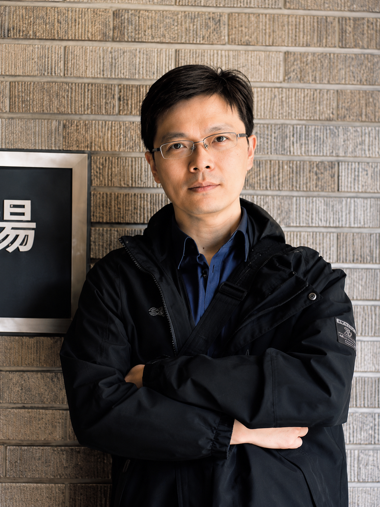

2026
IEEE Internet of Things Journal · Accepted
Assistant Professor · Director, AICV Lab
Artificial Intelligence & Computer Vision Laboratory

I build deep-learning and computer-vision systems that read the physical world — from city traffic to medical images — and translate it into decisions people can act on.
My work spans image processing, deep learning, medical image analysis, data mining and smart-city infrastructure. Across more than a decade at the National Center for High-Performance Computing and National Tsing Hua University, I have led research that moves from competition-winning models to deployed systems and granted patents.
Today, as Director of the AICV Lab at National Chung Hsing University, I focus on interpretable, agent-based AI for transportation, surveillance and risk assessment — research recognised at ICCV, ICPR, CVPR and IEEE workshops.
Six intersecting directions, united by a single goal: making perception systems that are accurate, efficient and explainable.
Lightweight, robust architectures — from xLSTM to recurrent models that survive missing data in the real world.
Multi-object tracking, re-identification and detection across UAV, maritime and urban surveillance scenes.
Image processing and analysis pipelines that bring deep learning to clinical and biomedical data.
Traffic forecasting, congestion warning and signal optimisation for intelligent transportation governance.
Grounded multi-agent LLM frameworks for interpretable risk assessment and spatial question answering.
Retrieval-augmented and pattern-recognition methods that turn raw sensor streams into actionable insight.
First-place finishes at the field's flagship competitions, plus national technology honours.
Warehouse Spatial Question Answering with an LLM Agent.
Smart Traffic Congestion Warning & Police Duty Support System.
UAV-based Multi-Object Re-identification & USV-based Multi-Object Tracking.
Multi-Modal Visual Pattern Recognition Challenge.
Top accuracy in the AI City Challenge workshop.
Recognised for applied AI innovation.
The five most recent journal papers from the AICV Lab, newest first.
Complete list of journal publications — C.-I. Huang shown in bold.
Four granted patents in Taiwan (ROC) and the United States — all as first inventor.
Nearly two decades of applied research projects spanning smart cities, disaster prevention, immersive technology and medical imaging.
Principal Investigator and Co-Principal Investigator roles on funded research projects.
We research deep learning and computer vision for real-world perception — traffic, surveillance, medical imaging and agentic multimodal AI. Students work hands-on with the same systems that win at ICCV, ICPR and CVPR and ship as deployed, patented technology.
Industrial Chair, IEEE Conference on Advanced Video and Signal-Based Surveillance (AVSS)
Adjunct Assistant Professor, Power Mechanical Engineering, National Tsing Hua University
Co-director, Ministry of Education AI Talent Cultivation Program
AI Course Instructor, Accounting Information Systems, Providence University
Best Industry-Academic Application Value Award, National University Software Competition
Open to research collaboration, graduate-student inquiries, and industry partnerships in AI and computer vision.
schumi@nchu.edu.tw